Project 01
ESP32 BLE Wearable Badge with 40 RGB LEDs
Custom outline, LiPo powered, assembled and tested
I am Shuja Chaudhry, a Hardware Design Engineer specialising in multilayer PCB design and embedded electronics. Over 100 delivered projects: battery powered wearables, BLE and WiFi devices, sensor front ends, power management and safety critical drivers, designed in KiCad and Altium Designer.
Click any board for the full write up, 3D render, routed layout and schematic sheets.
Custom outline, LiPo powered, assembled and tested
Four layer, dual MCU, secure element and tamper detection
Four zone pulsed electromagnetic field driver with hardware safety lockout
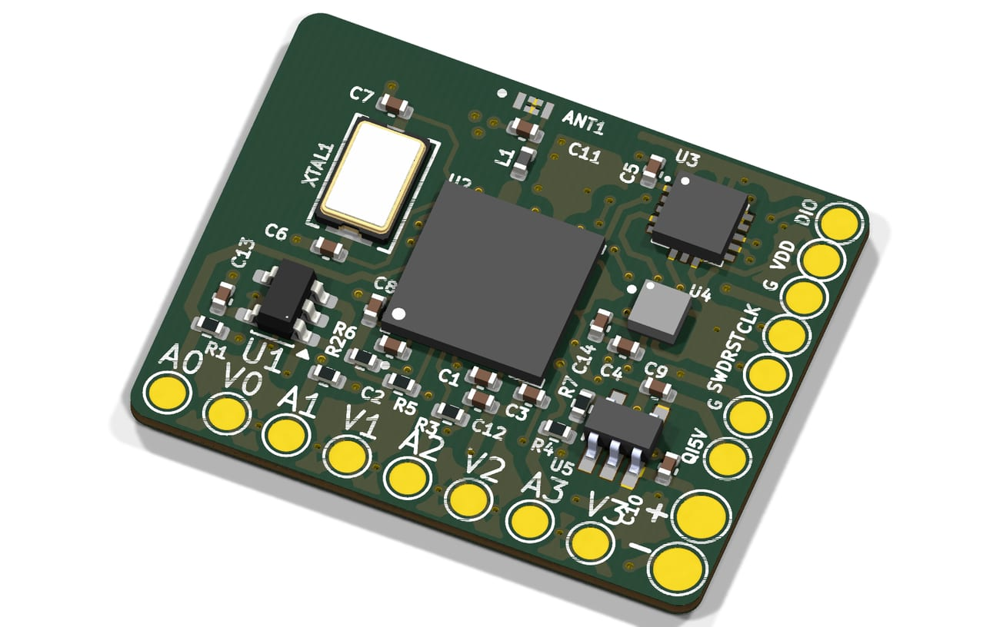
Compact reflow ready module for a smart ball product
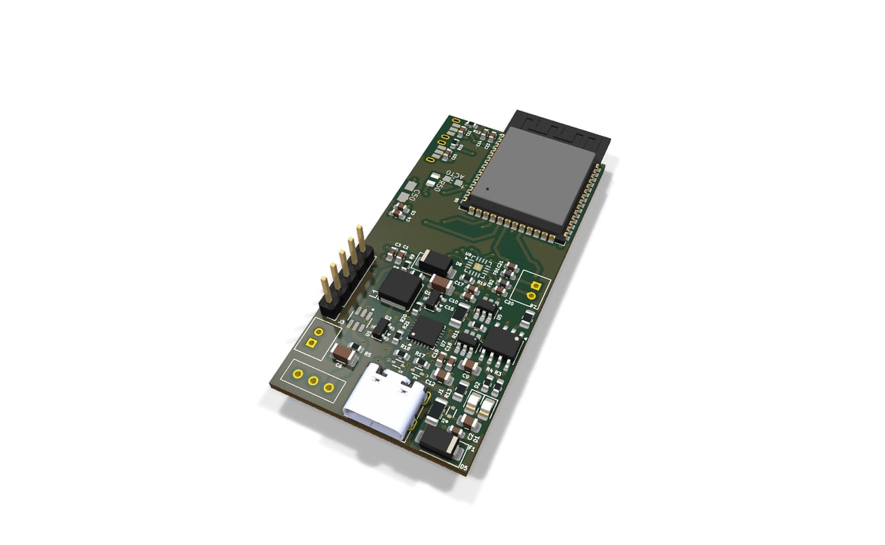
Four layer, full single cell Li ion charge and protection chain
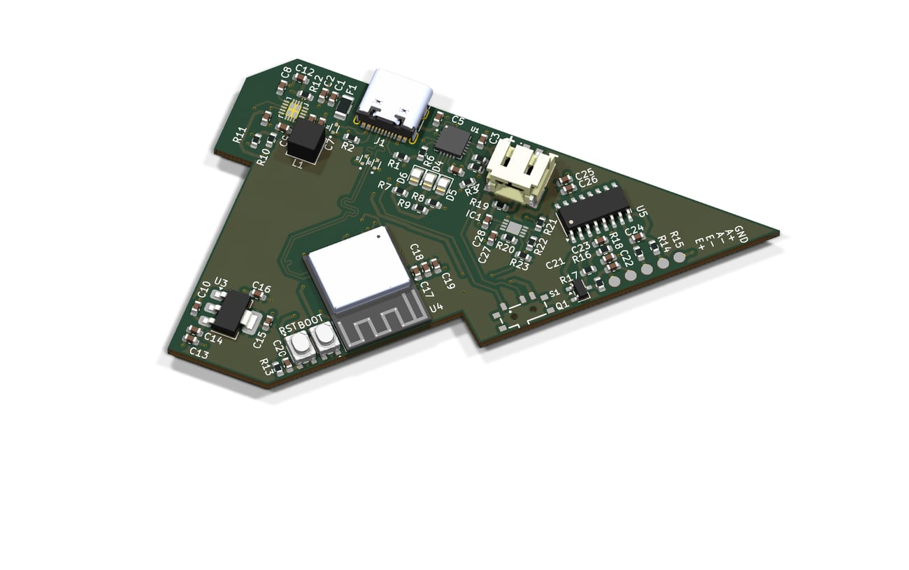
Custom shape, quiet analog front end, wireless weight sensing
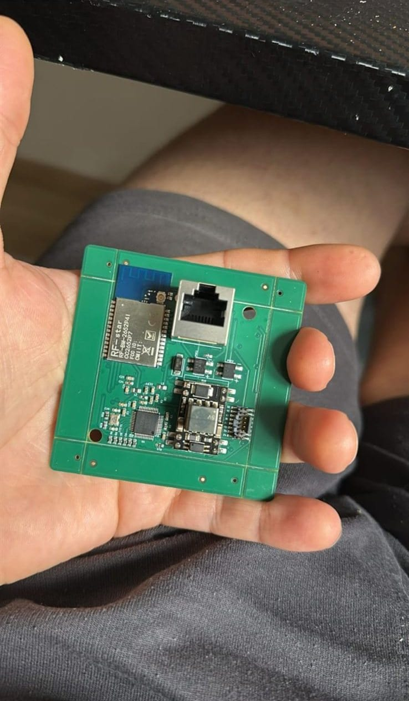
Ethernet powered multi sensor gateway, fabricated, assembled and tested
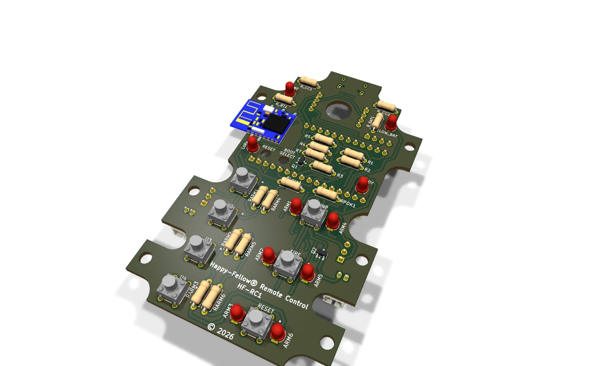
Two layer, custom hand grip outline, built as a small production batch
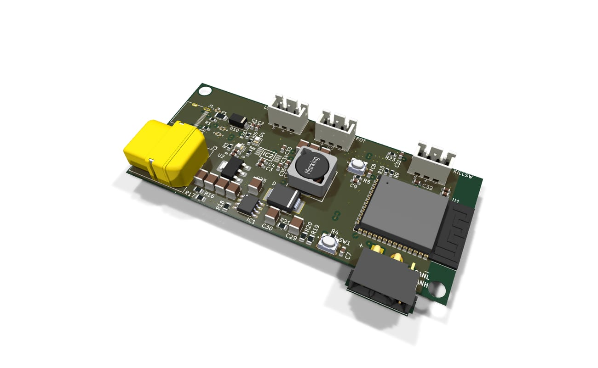
Four layer, 60 V input, USB and battery power multiplexing
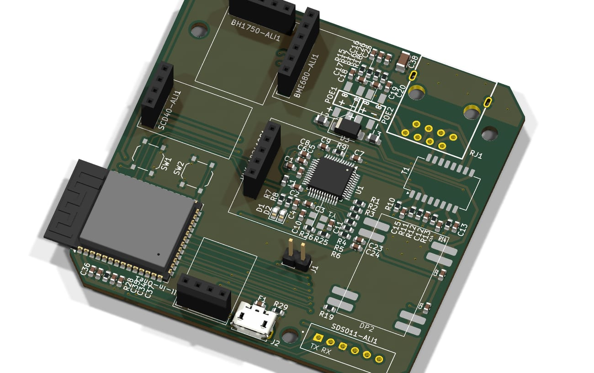
Two layer, 99 components, seven sensors on one compact outline
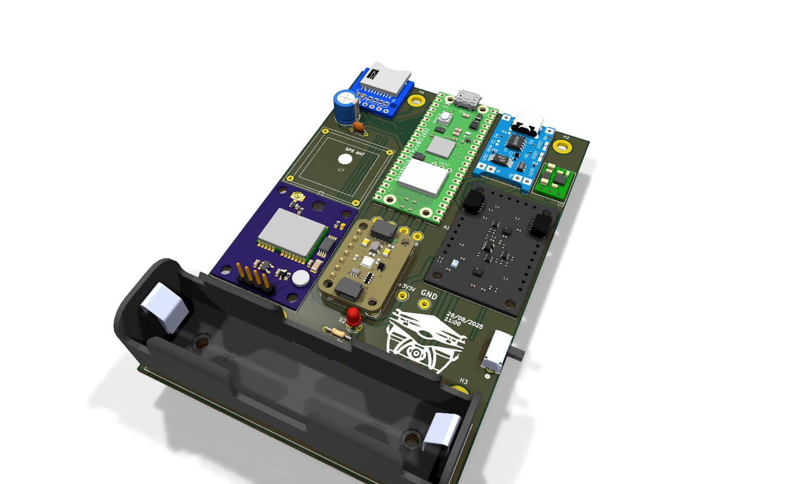
Two layer outdoor tracker carrier with 18650 charging
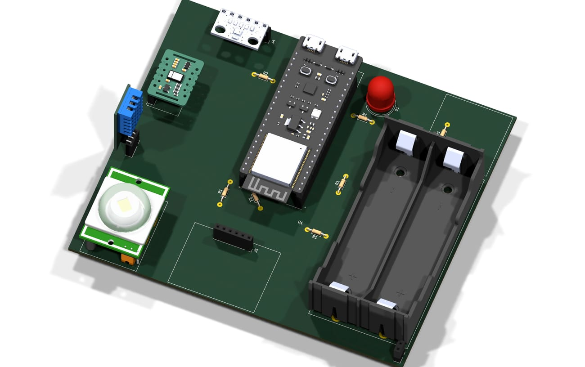
Two layer carrier with dual 18650 cells
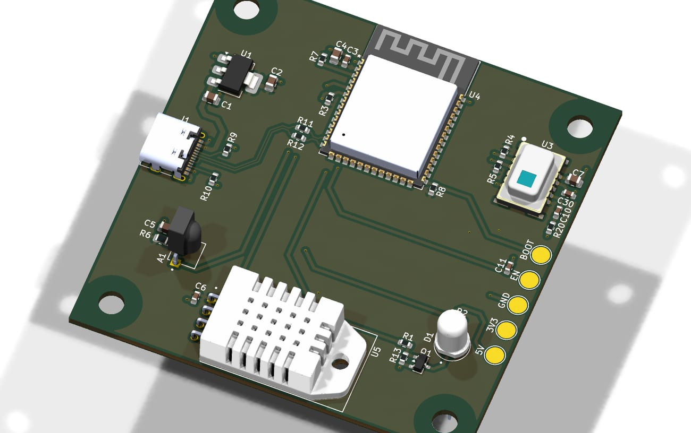
Two layer WiFi controller sized for a small wall enclosure
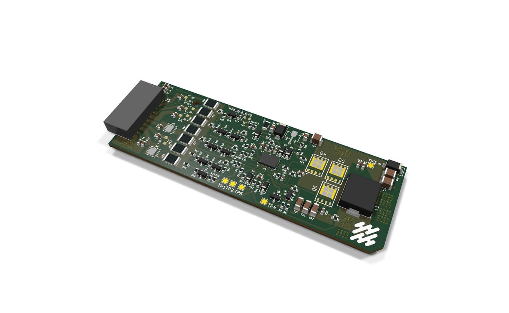
Four layer, 20 A, six high side MOSFET outputs
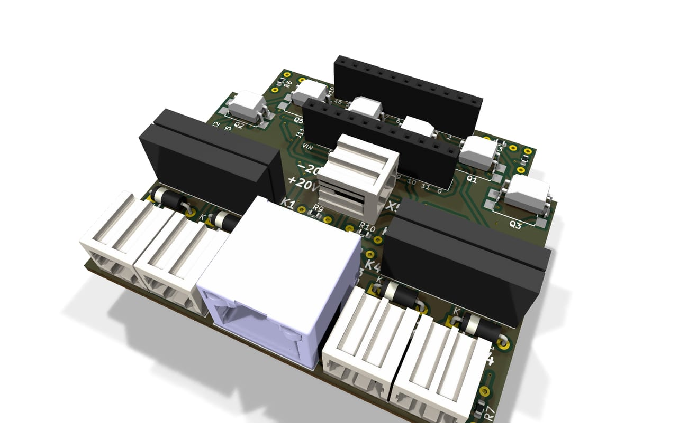
Three two layer boards sharing one controller pinout
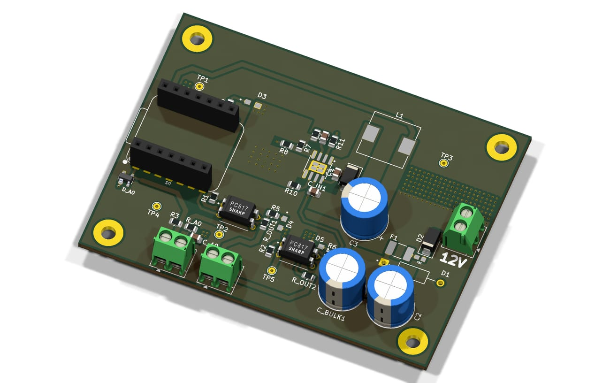
Rugged sensing board with a socketed control module
No projects in this group.
Block diagram, interfaces, power budget, size and cost targets agreed up front.
Component selection against stock and assembly capability so nothing needs a redesign later.
Clean, annotated schematics with a review pass before any layout starts.
Stack up, placement, routing, DRC and DFM checks with renders shared as it progresses.
Gerbers, drill, BOM, pick and place and assembly drawings ready for the fab house.
Test plan, first power up support and fixes for the next revision.
I work remotely and can align with UK and European hours. Happy to begin with a scoped evaluation task so you can judge the work on real output.